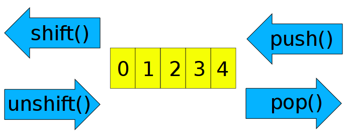

List variables
Table of Contents
1 Complex Variables handle lists of arbitrary complexity
In addition to scalar variables, there are only two other types of basic variables in Perl: arrays and hashes. Again, they are easily regognized by their sigil:
| Type | Sigil | Example |
|---|---|---|
| scalar | $ | $name |
| array | @ | @name |
| hash | % | %name |
2 Arrays
- contains ordered list of scalars
- starts counting elements from zero
- implements lists, stacks, queues
my $alph = 'atgc';
print length($alph), "\n";
my @alph = split '', $alph;
print "$#alph\n"; # index of last element
print scalar(@alph), "\n"; # scalar context => number of elements
my $c = 0;
foreach (@alph) {
print "$c: ", $alph[$c], $_, "\n"; # special variable $_; sigil shift!
$c++;
my $alph = 'augc'; # using the enclosure
}
print"$alph: $c ($_)", "\n";
4 3 4 0: aa 1: tt 2: gg 3: cc atgc: 4 ()
2.1 Assigning into arrays
my @a; $a[3] = 'fourth'; print $a[3]; # instant multi-dimensional arrays $b[2][3] = 'red queen';
fourth
2.2 Ranges
Range operator an easy way to generate lists:
my @a = ((1 .. 4), reverse ('a' .. 'z'));
print "@a";
1 2 3 4 z y x w v u t s r q p o n m l k j i h g f e d c b a
2.3 Functions to manipulate arrays
Most common functions manipulate arrays at their ends. They are special cases of function called splice().

@alph = qw(a t g c); print "@alph\n"; push @alph, 'u'; print "@alph\n"; $last = pop @alph; print "@alph\t$last\n"; $first = shift @alph; print "@alph \t$first\n"; unshift @alph, $first; print "@alph\n";
a t g c a t g c u a t g c u t g c a a t g c
2.4 Slicing arrays
my @months = qw( Jan Feb Mar Apr May Jun Jul Aug Sep Oct Nov Dec); my @three = reverse sort @months[ -1..1 ]; print "@three";
Jan Feb Dec
- Months with 31 days:
# 0 1 2 3 4 5 6 7 8 9 10 11 12
my @months = qw( Jan Feb Mar Apr May Jun Jul Aug Sep Oct Nov Dec);
print join (", ", @months[0, 2, 4, 6, 7, 9, 11]), "\n";
Jan, Mar, May, Jul, Aug, Oct, Dec
2.5 Swapping values without intermediate variables:
my ($y, $x) = ("aaa", "bbb");
print "$x $y\n";
($y, $x) = ($x, $y);
print "$x $y\n";
bbb aaa aaa bbb
3 Hashes
- Holds key/value pairs of scalars
- There is no order in which they values are retrieved!
use Data::Dumper; # standard perl module
my @array = qw( bread 5 milk 3 butter 1);
print Dumper \@array;
my %hash = @array;
print Dumper \%hash;
# special syntax for hashes
%hash2 = (cheese => 2, meat => 'no bones');
print Dumper \%hash2;
# access a value
print "Buy ", $hash{bread}, " breads\n";
# any key can be assigned a value and will come to existance
# this is known as auto-vivification
$hash{apples} = 6;
$hash{pears} = undef;
my $var; #undef
$VAR1 = [
'bread',
'5',
'milk',
'3',
'butter',
'1'
];
$VAR1 = {
'bread' => '5',
'butter' => '1',
'milk' => '3'
};
$VAR1 = {
'cheese' => 2,
'meat' => 'no bones'
};
Buy 5 breads
3.1 Working with hashes
my %hash = ( bread => 5, milk => 3, butter => 1);
# safe way to see if key exists - without autovivification
print "Bread? ", exists $hash{bread};
# does the key have a value?
print "\nBread has value? ", defined $hash{bread};
# list of keys. Unordered!
print "\nKeys: ", join " ", keys %hash;
# how many keys?
print "\nCount of keys: ", scalar keys %hash;
# list of values;
print "\nValues: ", join " ", values %hash;
Bread? 1 Bread has value? 1 Keys: bread butter milk Count of keys: 3 Values: 5 1 3